キャラを置いて動かそう 〜はじめてのGDevelop〜
🎯 この章でできるようになること
- ゲームエンジンが何をしてくれるのか説明できる
- GDevelopで新しいプロジェクトを作り、保存できる
- エディタの5つのエリアの名前と役割がわかる
- 主人公と地面を置いて、走ってジャンプできるゲームを動かせる
※ 講習の最初に、第0章の準備がうまくいったか全員で確認します。
できなかった人も大丈夫、ここで一緒に解決するよ。
1-1. ゲームエンジンってなに？
マリオもスプラトゥーンも原神も、ゲームには共通して必要なものがあります。
絵を画面に表示する、音を鳴らす、重力で落ちる、ボタン入力に反応する……。
これを毎回ゼロから作るのは大変すぎる！
そこで、ゲームに必要な機能をぜんぶ詰め込んだ道具箱が生まれました。
それがゲームエンジンです。
作り手はアイデアとルール作りに集中できる
プログラムの文字を打つかわりに「イベント」というブロックを並べてルールを作るのが特徴。
GDevelopで作られたゲームが、Steamなどのゲームストアで売られていることもあるよ。
1-2. この講座で作るもの 〜ゼロから組み立てる〜
この講座では、空っぽのプロジェクトから横スクロールアクションゲームを組み立てていきます。
毎回、ゲームに部品がひとつずつ増えていくイメージです。
毎回ひとつずつ部品を足して、最後に自分だけのゲームを完成させる
横スクロールアクションの定番スタイルで、マリオもこの仲間だよ。
1-3. 新しいプロジェクトを作ろう
まずはゲーム1本分の入れ物、プロジェクトを作ります。
無料プランは保存できるプロジェクトの数に上限があるので、この講座ではこの1つだけを最後まで使います。
ブックマークから https://editor.gdevelop.io を開きます。
右上に自分のユーザー名やアイコンが出ていればログインOK。
出ていなければ「Log in」からログインしよう。
ホーム画面の左側のメニューから「Create」（作る）を選び、右のほうにある「＋ Create new game」（新しいゲームを作る）のボタンを押します。
「Create a new game」の画面が開いて、いろいろなテンプレート（ひな形）が並びます。
「Continue with Human Intelligence」の列のいちばん左にある「Empty project」（空っぽのプロジェクト）を選ぼう。
今回はゼロから作るので、Platformerなどの完成済みのテンプレートは選びません。
上の「What would you like to create?」はAIにゲームを作らせる欄なので、ここでは使いません。
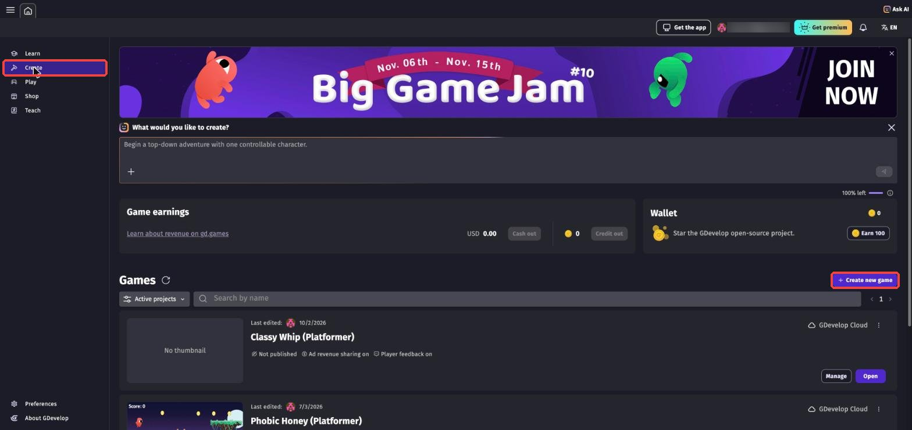
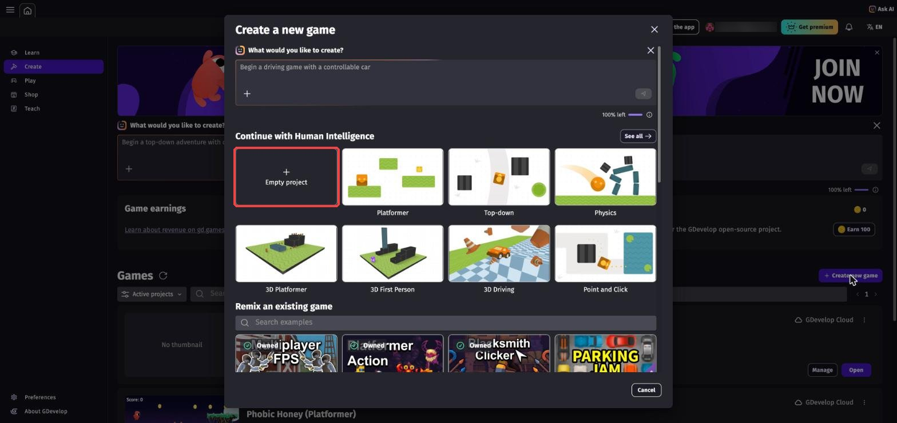
画面の大きさは、最初に選ばれている「Desktop & Mobile landscape」（1280x720）のままでOK。
「Project name」（プロジェクト名）の欄に my-action-game と入力します。
名前は半角英数字にしておこう。
「Where to store this project」（どこに保存するか）が「GDevelop Cloud」（アカウントへの保存）になっていることを確かめます。
最後に右下の「Create new game」を押します。
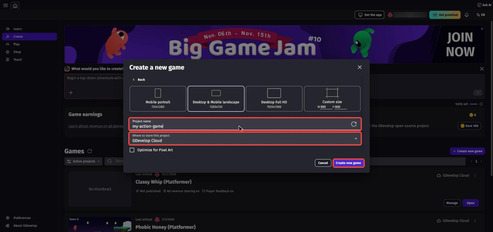
プロジェクトができると、最初のシーン（ゲームの場面）が「Untitled scene」という名前で用意されています。
画面の左上の「≡」（3本線のボタン）を押すと、プロジェクトマネージャー（シーンの一覧が出る場所）が開きます。
「Scenes」の下にある「Untitled scene」を右クリック（または右はしの「⋮」）→「Rename」（名前を変える）を選び、Stage1 にしよう。
名前を入れたら Enter で決定し、右上の「×」でプロジェクトマネージャーを閉じます。
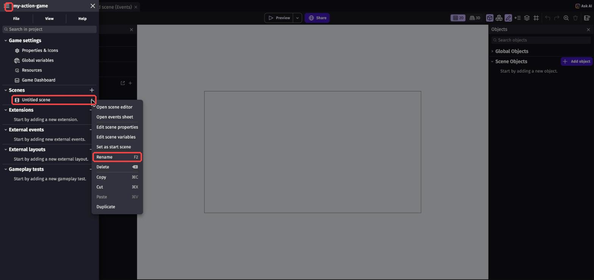
Ctrl + S⌘ + S を押すか、左上の保存ボタン（フロッピーディスクのマーク）を押して保存します。
画面の下に「Project properly saved」（ちゃんと保存できた）と出れば成功です。
保存していない変更があると、保存ボタンに小さな点がつき、ブラウザのタブの名前に「*」がつきます。
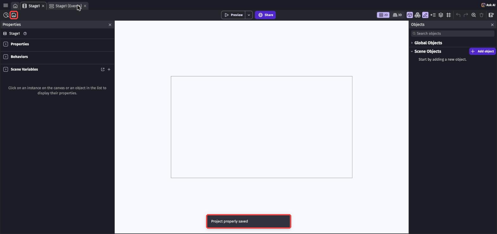
タイトル画面で1シーン、ステージ1で1シーン、のように使い分ける。
今は「Stage1」という1つの場面を作っているよ。
1-4. エディタ画面の見方 〜5つのエリアを覚えよう〜
最初はいろいろなボタンがあって戸惑うけど、大事なのは5つのエリアだけ。
これから毎回使うので、名前と役割をセットで覚えよう。
パネルは左・真ん中・右の3列に分かれています。
パネルの並び方は画面の大きさによって変わることがあるので、下の図は「だいたいの位置」だと思ってね。
「本だな・作業机・倉庫・プロフィール帳・再生ボタン」と覚えよう
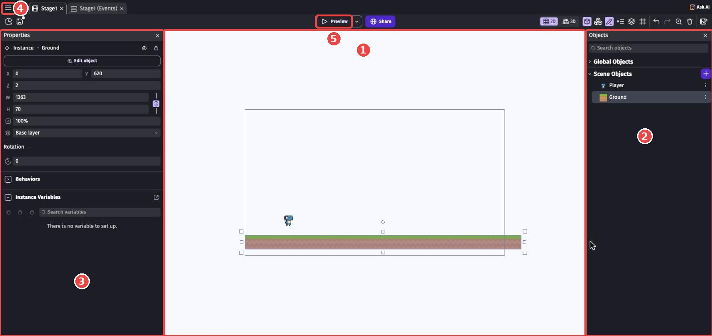
| エリア | たとえ | 役割 |
|---|---|---|
| ①シーンエディタ（Scene editor） | 作業机 | 真ん中。ゲームの世界を目で見て組み立てる場所 |
| ②オブジェクト（Objects） | 倉庫 | 右側。このシーンに登場するモノ（キャラ・地面など）の一覧 |
| ③プロパティ（Properties） | プロフィール帳 | 左側。選んだモノの位置・大きさ・ビヘイビアなどの設定 |
| ④プロジェクトマネージャー（Project manager） | 本だな | 左上の「≡」で開く。シーンやゲーム全体の設定がならぶ場所 |
| ⑤Preview（プレビュー） | 再生ボタン | 上の真ん中。作りかけのゲームをその場で動かして試す |
🚨 パネルが見当たらないとき
画面が小さいと、パネルが閉じていたり、アイコンだけになっていたりします。
パネルの右上の「×」で閉じてしまったときは、画面の右上にあるボタンの列（シーンエディタの上）から開き直せます。
ブラウザの画面を最大化しておくと、全部のパネルが見やすくなるよ。
1-5. 主人公（Player）を用意しよう
いよいよ主人公です。
GDevelopには、無料で使える絵や音がたくさん入ったアセットストア（素材のお店）がついています。
ここから好きなキャラを選んで、ゲームに入れよう。
アセットストアは、その素材が並んだお店。
無料のものだけで、ゲーム1本ちゃんと作れるよ。
右側のオブジェクトパネル（倉庫）の「Scene Objects」の右にある「＋ Add object」（オブジェクトを追加）ボタンを押します。
オブジェクトが1つ以上あるときは、このボタンは紫色の「＋」だけになります。
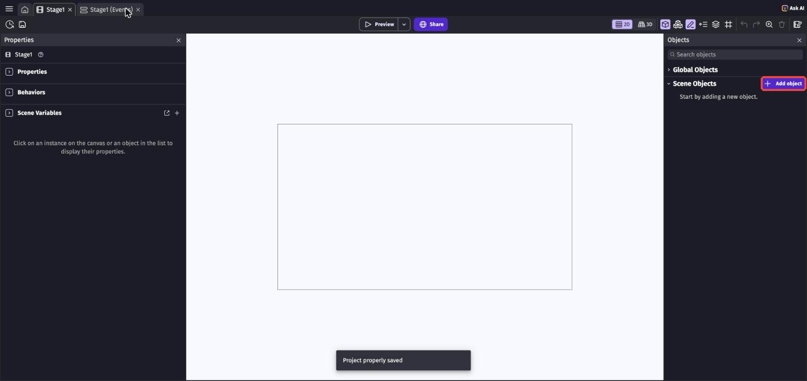
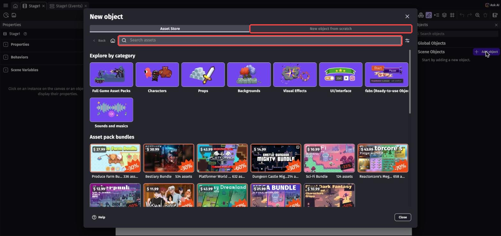
「New object」の画面が開いたら、「Asset Store」（アセットストア）のタブのまま、検索欄に character と入力して Enter を押します。
右側の「OBJECT FILTERS」（しぼりこみ）で、「Viewpoint」の「Side view」（横から見た絵）と、「Pack type」の「Free」（無料）にチェックを入れると、横スクロール向きの無料キャラだけになります。
気に入ったキャラを押すと、くわしい画面が開きます。
右下の「Add to the scene」を押すと、オブジェクトパネルにキャラが追加されます。
この教科書では「Dino Doux」（青い恐竜）を使っています。
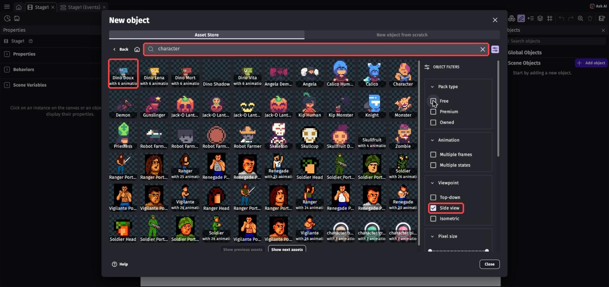
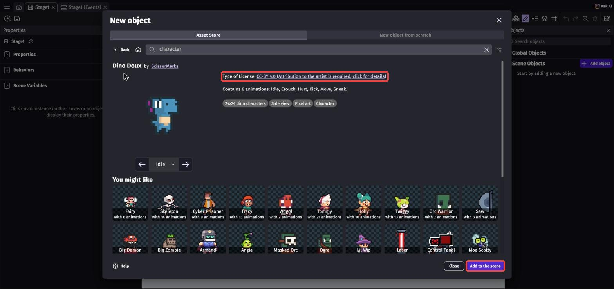
「CC0」は自由に使ってOK。
「CC-BY」は自由に使ってOKだけど、作った人の名前（クレジット）をゲームのどこかに書くのがルールです。
Dino Doux は CC-BY なので、第6章でクレジットを書こう。
💡 歩く・ジャンプするなどの動き（アニメーション）がついたキャラを選ぶと、あとで楽しくなるよ。
迷ったら、まずは見た目で選んでOK。
あとから変えることもできます。
オブジェクトパネルに、追加したキャラが並びます。
キャラを右クリック →「Rename」で、名前を Player に変えよう。
名前は半角英数字で、最初の文字は大文字にしておきます（この教科書の名前とそろえるため）。
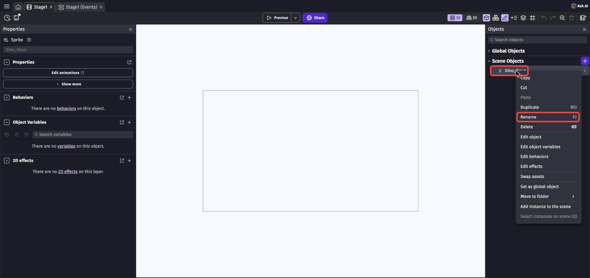
「Add to the scene」を押しても、オブジェクトパネルに追加されるだけで、まだシーンには置かれていません。
オブジェクトパネルの Player を、シーンエディタ（作業机）の左のほうへドラッグ＆ドロップします。
ドラッグがうまくいかないときは、Player の右はしの「⋮」→「Add instance to the scene」（シーンに置く）でもOK。
画面の真ん中に置かれるので、あとでプロパティの X と Y で位置を直そう。
素材によっては、キャラがとても小さいことがあります（Dino Doux は 24x24）。
置いたPlayerをクリックして、左のプロパティの W（幅）と H（高さ）を 72 くらいにすると見やすくなります。
W と H の右にあるくさりのマークがONだと、W を変えたとき H も同じ割合で変わります。
🎬 操作動画: オブジェクトパネルからシーンへPlayerをドラッグして置く様子（ch1-mov01）
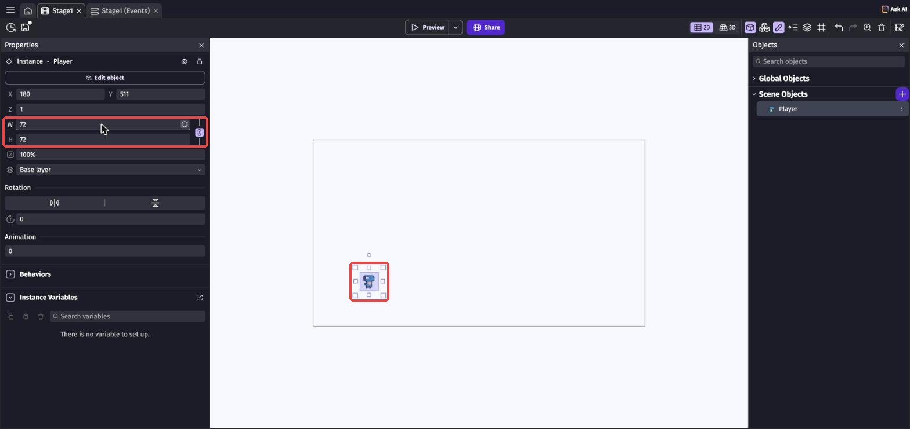
たいやきの「型」と「焼けたたいやき」の関係と同じで、1つの型からいくつでも置けるよ。
型（オブジェクト）を変えると、置いた実物ぜんぶが変わります。
1-6. 地面（Ground）を用意しよう
もう一度オブジェクトパネルの「＋」を押して、検索欄に grass や ground と入力します。
素材の名前の下に「tiled sprite」と書いてあるものを選ぼう（この教科書では「Grass」）。
「Add to the scene」で追加したら、名前を Ground に変えます。
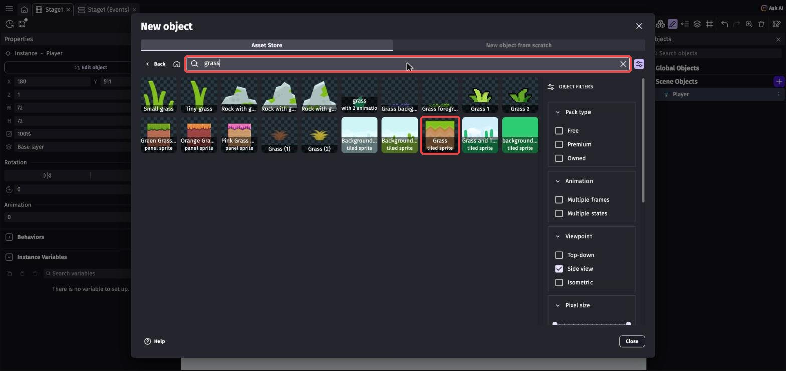
Ground をシーンの下のほう、Player の真下あたりにドラッグして置きます。
地面を選ぶと四すみに小さな四角（ハンドル）が出るので、右側のハンドルを右へドラッグして横長に伸ばそう。
ドラッグがむずかしければ、左のプロパティに数字を入れても同じです。
この教科書では X を 0、Y を 620、W を 1360 くらい、H を 70 にしています。
数字で入れるときは、先に W と H の右にあるくさりのマークを押してOFFにしてから入れよう（ONのままだと W を変えたとき H まで大きくなってしまいます）。
伸ばすと絵がくり返し並ぶタイプ（Tiled Sprite）なら、きれいな地面になります。
絵が引きのばされてしまうタイプなら、伸ばさずに Ground をいくつも横に並べればOK。
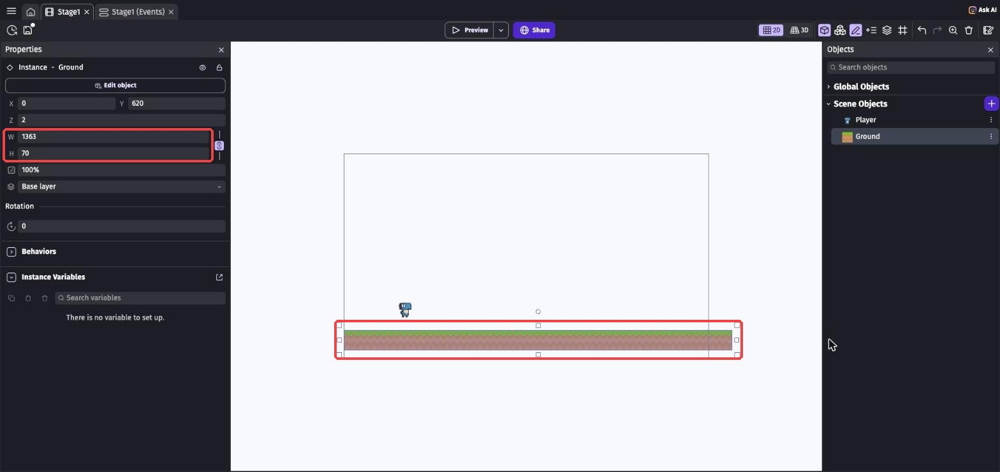
地面や壁など、長いものを作るときに便利。
ふつうの絵のオブジェクトは「Sprite（スプライト）」と呼ぶよ。
1-7. ビヘイビアで「走る・跳ぶ・乗れる」をつけよう
今のままPreviewしても、Playerは動きません。
置いただけの絵には、まだ「動き方」が決まっていないからです。
そこで使うのがビヘイビア（Behavior）。
オブジェクトに「性格」や「能力」をつけるしくみで、ボタンを押すだけで走る・跳ぶ・重力で落ちるといった動きがまとめて手に入ります。
主人公には Platformer character、地面には Platform をつける
オブジェクトパネルの Player をダブルクリック（または右クリック →「Edit object」）します。
「Edit Player」の画面が開いたら、上のタブから「Behaviors」（ビヘイビア）を選ぼう。
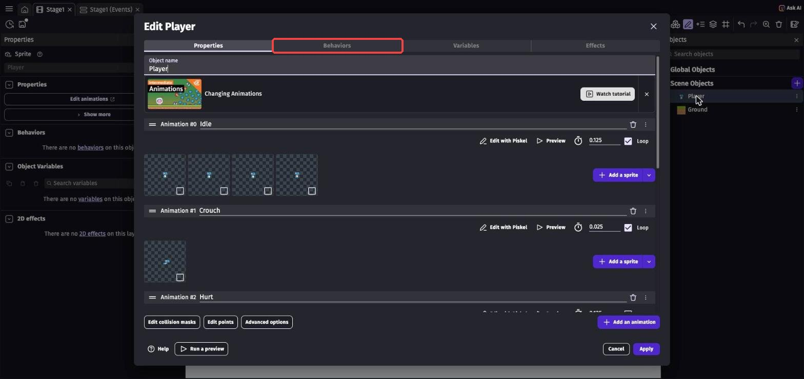
右下の「＋ Add a behavior」（ビヘイビアを追加）を押します。
「Add a new behavior to the object」の画面が開いたら、検索欄に platformer と入れて、いちばん上の「Platformer character」（プラットフォーマーのキャラ）を選びます。
似た名前（Platformer character animator など）がたくさんあるので、まちがえないでね。
追加できたら、右下の「Apply」（適用）を押して設定画面を閉じます。
💡 シーンでPlayerを選んだとき、左のプロパティの「Behaviors」の右の「＋」からも同じ画面を開けます。
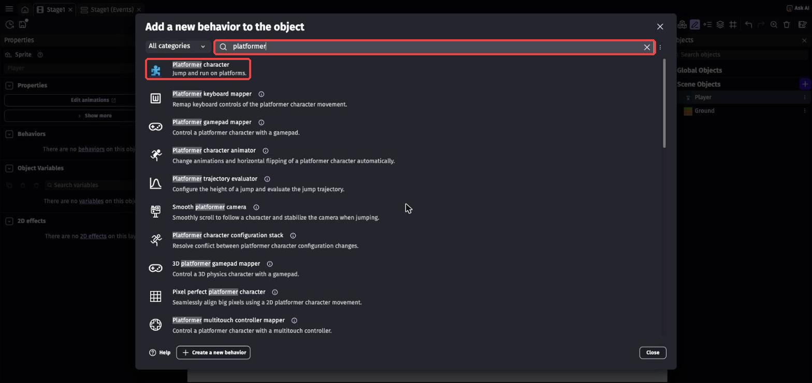
同じように Ground をダブルクリック →「Behaviors」→「Add a behavior」で、今度は platform と検索して「Platform」（足場）を選んで追加。
「Type」は「NormalPlatform」（ふつうの床）のままでOK。
「Ledges can be grabbed」（はしにつかまれる）のチェックは外しておきます。
「Apply」で閉じます。
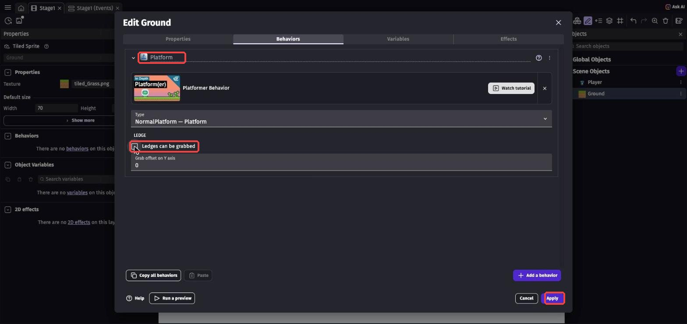
1-8. Previewで遊んでみよう！
画面の上の真ん中にある「▷ Preview」ボタンを押します。
新しいウィンドウが開いて、ゲームが始まります。
2回目からは、ボタンの名前が「Update」に変わることがあります。
そのときは、開いているゲームのウィンドウを閉じてからもう一度押すと、最初から始まります。
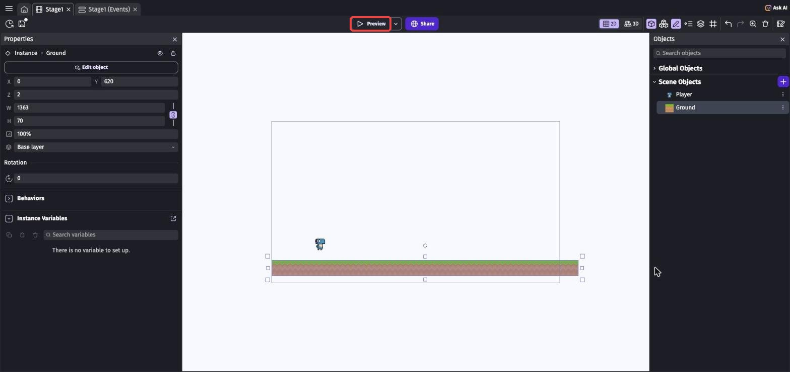
| 操作 | キー |
|---|---|
| 左右に移動 | ← → |
| ジャンプ | スペース または Shift |
Playerが地面の上に乗って、走ったりジャンプしたりできれば大成功！
キーを押しても動かないときは、まずゲームの画面を1回クリックしてから操作してみよう。
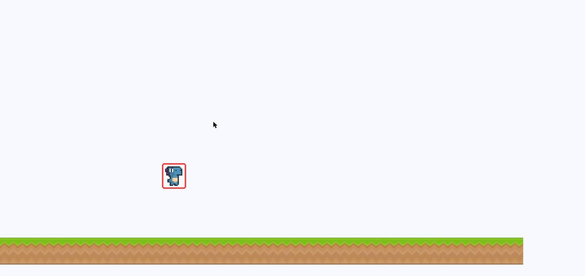
遊び終わったら、Previewのタブ（ウィンドウ）を閉じてエディタに戻ります。
Ctrl + S⌘ + S で保存しよう。
作業の区切りごとに保存するクセをつけておくと、トラブルのときに助かります。
ゲーム作りでは「少し作る → Previewで試す」を何十回もくり返すよ。
1-9. 💪 やってみよう
課題1: 走る速さとジャンプ力を変えてみよう
Player の設定画面 →「Behaviors」を開くと、Platformer character の細かい設定が並んでいます。
その中の Max. speed（最高速度、最初は 250）と Jump speed（ジャンプの勢い、最初は 600）の数字を変えて、Previewで違いを確かめよう。
「自分が気持ちいい」と思う数字を見つけたら合格。
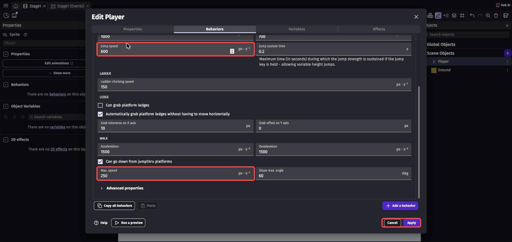
ヒントを見る
まずは今の数字をメモしてから、1.5倍や半分にしてみると違いがわかりやすいよ。
Gravity（重力、最初は 1000）の数字も変えると、ふわふわ跳ぶゲームや、ずっしり重いゲームになります。
変えすぎて困ったら、メモした数字に戻せばOK。
迷ったら、公式コース「Make a Platformer Game」で使われている数字を試してみよう。
Jump speed（ジャンプの勢い）は 717、Jump sustain time（ジャンプボタンを押し続けたときに高く跳べる時間）は 0.3、Max. falling speed（最大落下速度）は 800、Acceleration（加速）は 1000、Max. speed（最高速度）は 400 です。
ここからスタートして、自分好みに少しずつ変えていくのもアリ。
課題2: 段差を作って登ろう
シーンにもう1つ Ground を置いて、少し高い位置に段差を作ろう。
Previewで、その段差にジャンプで飛び乗れるか確かめます。
ヒントを見る
オブジェクトパネルから Ground をもう一度ドラッグすれば、2つ目が置けるよ（設計図からもう1個実物を作るイメージ）。
高すぎると跳べないので、課題1のジャンプ力と相談しよう。
課題3（チャレンジ）: プロパティで位置を調べよう
シーンに置いた Player をクリックすると、プロパティ（プロフィール帳）に X と Y の数字が出ます。
Playerを右へ動かすとXがどう変わるか、上へ動かすとYがどう変わるか調べて、ノートに書こう。
ヒントを見る
GDevelopでは、下へ行くほどYの数字が大きくなります。
算数のグラフと上下が逆なので、ここで覚えておくと第4回で役に立つよ。
1-10. 🚨 つまずきポイント集
Previewを押すと、Playerが地面をすり抜けて落ちていく
原因: Ground に Platform ビヘイビアがついていない。
直し方: Ground をダブルクリック →「Behaviors」に Platform があるか確認しよう。
なければ「Add a behavior」で追加して「Apply」。
Playerがまったく動かない・落ちもしない
原因: Player に Platformer character ビヘイビアがついていない。
または、ゲーム画面が選ばれていない。
直し方: Player の「Behaviors」を確認しよう。
ついているのに動かないときは、Previewのゲーム画面を1回クリックしてからキーを押してみよう。
日本語入力がオンだとキーが効かないこともあるので、「半角/全角」キーで「英数」キーで英字入力にしよう。
Previewを押しても、新しいタブやウィンドウが開かない
原因: ブラウザが「ポップアップ（勝手に開く画面）」をブロックしている。
直し方: アドレスバーの右はしに、ブロックされたことを知らせるアイコンが出ていないか見てみよう。
そこから「editor.gdevelop.io のポップアップを常に許可」を選ぶと開くようになります。
「Maximum of 3 cloud projects reached」と出て、プロジェクトを作れない
原因: 無料プランで保存できるプロジェクトの数（3つ）を使い切っている。
直し方: 自分で消さずに、講師を呼んでね。
いらない練習用のプロジェクトがあれば、講師と一緒に整理します。
家で4本目のゲームを作りたいときは、第0章「4本目のゲームを作りたくなったら」を見てね。
まちがって何かを消してしまった
直し方: あわてず Ctrl + Z⌘ + Z（元に戻す）。
ほとんどの操作は取り消せるよ。
シーンエディタで迷子になった（何も見えなくなった）
直し方: シーンの何もないところを右クリック →「Zoom to fit content」（置いたもの全部が見える大きさにする）を選ぼう。
マウスホイールでズームを戻すこともできます。
シーンの中をスペースキーを押しながらドラッグすると、画面を動かせます。
それでもわからなければ、オブジェクトの一覧やインスタンスの一覧から Player を探すと、その場所に移動できることがあります。
💡 15分たっても直らないときは、次の「AIを味方につけよう」の方法で相談してみよう。
1-11. 🤖 AIを味方につけよう
ChatGPTやClaudeなどのAIは、GDevelop学習の強力な味方です（13歳以上なら保護者の同意のもとで使えます）。
GDevelopは画面操作が中心なので、「今どういう状態で、何をしたら、どうなったか」を言葉で伝えるのがコツです。
この章でのAIの使い所
✅ 良い使い方 — 自分で15分考えてわからなかったら聞く
- 操作で迷子になったら: 「〇〇したいけどボタンが見つからない」を具体的に聞く
- 用語の解説: ビヘイビア、インスタンスなど、わからない言葉を自分のレベルで説明してもらう
そのままコピペで使えるプロンプト（AIへの指示文）の例:
PlayerにPlatformer characterビヘイビアを、GroundにPlatformビヘイビアをつけましたが、Previewすると地面をすり抜けて落ちてしまいます。
原因として考えられることを、確認する順番に教えてください。
学校や部活にたとえて説明してください。
🚫 やめておこう
- 「自分のゲームにどんなキャラを使うか」をAIに決めてもらう（自分で選ぶから自分のゲームになる！）
- AIの答えを試して確かめずに信じる（AIは古いGDevelopの画面の話をすることもある。
ボタンの名前や場所は、必ず自分の画面で確認）
1-12. ✅ チェックリスト
全部チェックできたら第1章クリア！
🎉 次回は、足場をたくさん置いてステージらしくして、カメラが主人公について来るようにするよ。
はじめての「イベント」も登場します。
1-13. 📚 もっと知りたい人へ
- 公式プラットフォーマーチュートリアル Part 1・Part 2（英語） — この章と同じ「プロジェクト作成〜主人公づくり」を公式の手順で復習できる
- GDevelop公式Wiki — GDevelopの公式説明書（英語）。
ブラウザの翻訳機能を使うと日本語で読めるよ - Platformer character の解説（公式Wiki） — 課題1の設定項目の意味がくわしく書いてある